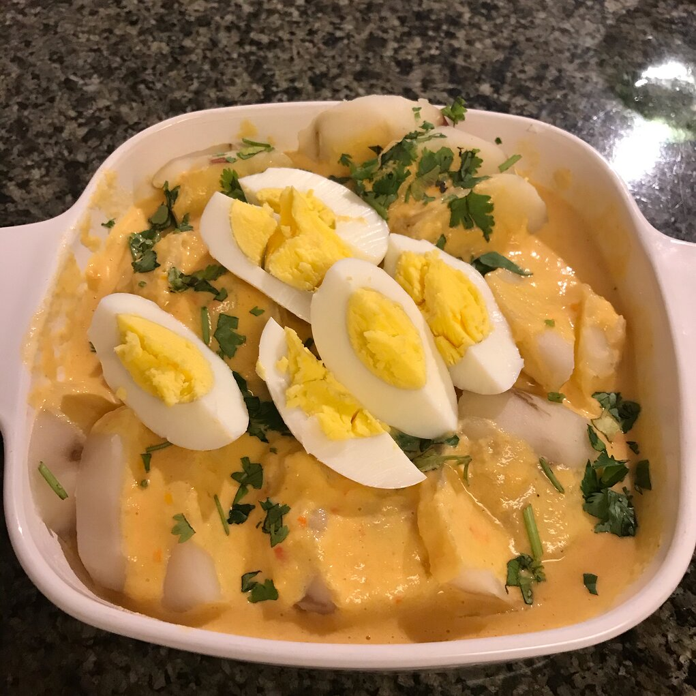

Papa a la huancaina

Description
TThis means Huancainan-style potato and comes from Huancayo, Peru. It's an easy-to-make dish of sliced potatoes with a special sauce.
Ingredientes
- 12 Yukon Gold potatoes
- 1 tablespoon olive oil, or to taste/li>
- 1 onion, sliced
- 1 pound cream cheese, softened
Steps
- Place potatoes into a large pot and cover with salted water; bring to a boil. Reduce heat to medium-low and simmer until tender, about 20 minutes. Drain and set aside to cool slightly.
- Heat olive oil in a skillet over medium heat. Cook onion until tender, about 10 minutes.
- Bring a small saucepan of water to a boil. Boil chile peppers until soft, about 5 minutes. Run chiles under cold water to cool until cool enough to handle; remove and discard skins.
- Blend onion, chile peppers, cheese, vegetable oil, garlic, salt, and pepper in a blender until smooth. Stream evaporated milk into the blended mixture while continuing to blend until a creamy sauce is achieved.